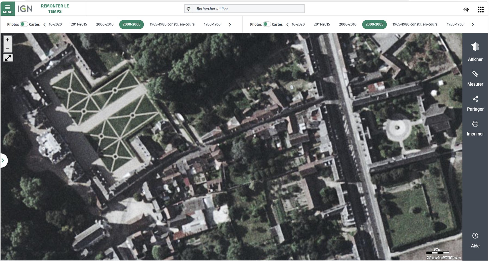
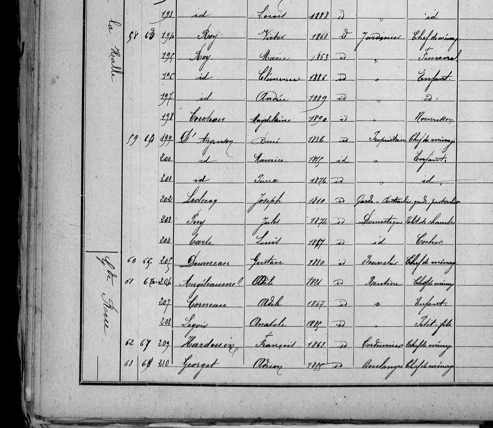
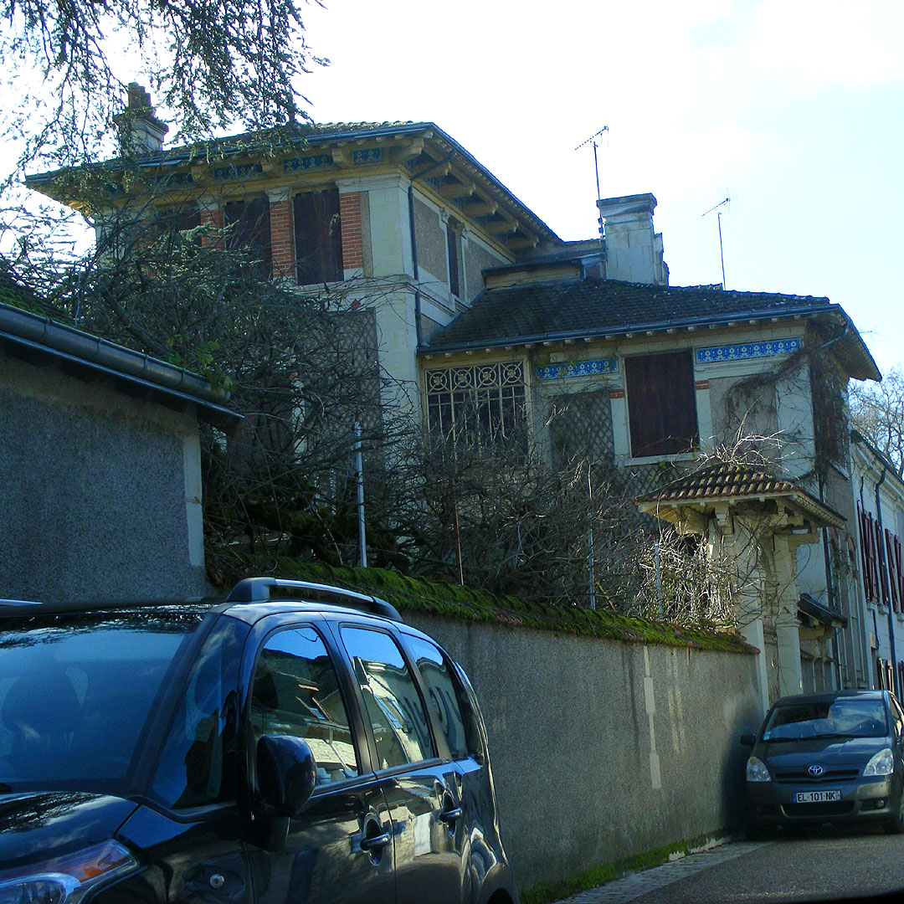
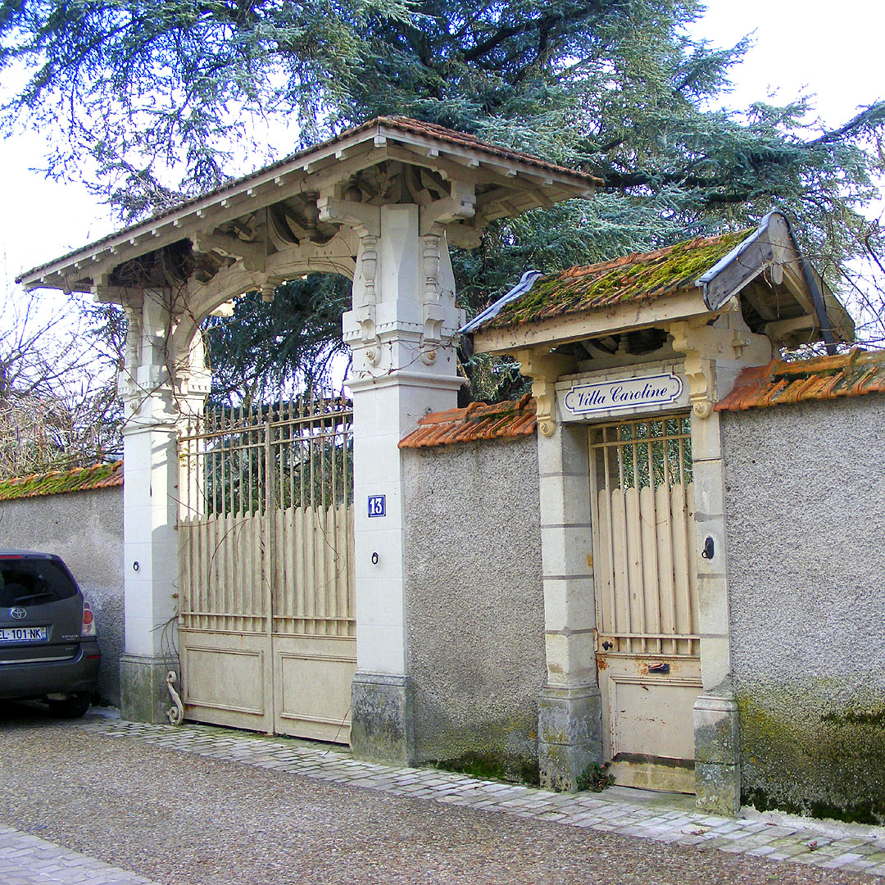

Comment lire les niveaux de confiance
| Tag | Sens |
|---|---|
| [F] | Fait établi (document officiel, archive, photo datée contrôlée) |
| [S] | Source secondaire (presse, blog, office de tourisme, tradition rapportée) |
| [H] | Hypothèse plausible, pas encore prouvée |
| [ÀV] | À vérifier — cité ailleurs, pas encore contrôlé sur pièce |
Après chaque source : lien cliquable, citation courte, et image quand elle existe.
En quelques mots
A — Établi sur pièces
La Villa Caroline porte l’adresse 13 rue Pierre-d’Argenson, parcelle cadastrale (réf. nationale 86183000AB0143) [F]. Surface affichée au plan cadastral informatisé (PCI) : 366 m² — figure cadastrale, non arpentage géomètre [F].
Vers 1903, une carte postale de cette rue légende « la Villa à droite » [F].
→ Geneanet — carte postale #7781445
Volume principal déjà là sur les orthophotos 1950–1965 ; piscine absente alors, visible au plus tard 2000–2005 [F].
Maison non classée monument historique [F]. Elle entre dans le régime des abords du château (périmètre de 500 m) : travaux sensibles soumis à l’avis de l’architecte des Bâtiments de France (ABF) [F].
→ PLU / abords — GPU
→ POP — château / Mérimée PA00105572
Notice AGORHA : a « une villa aux Ormes (Vienne) en 1890 » [F] (notice biographique seulement).
Le 7 novembre 1890, achète une vigne lieu-dit « les Ormes », commune de — 1 ha 48 a 4 ca, 3 300 F — pas la villa [F]. Tour de en 1892 ; mort à en 1897 [F].
→ AD86 — répertoire Lasserré, vue 37
→ FranceArchives — inventaire / succession Salis
Tables décennales Ormes 1883–1902 : aucun indexé (N/M/D) [F] ; naissance Salsier Louis, 1891 (≠ ) [F]. Sur le recensement 1891 (vues consultées : Place de la Halle, Grande Rue) : non repéré [F] (négatif limité aux vues lues).
→ TD Ormes 1883–1892 · TD 1893–1902
→ REC 1891
Mariage Ludger × Coutard, 16 avril 1898, aux Ormes [F]. Annuaire agrégateur contemporain : Fabrice au n°13 [F] — adresse d’annuaire, pas un titre de propriété.
→ TD mariages 1893–1902
→ Annuaire agrégateur — Audy Fabrice
La cote AN AJ/52/361 citée par AGORHA est un dossier d’élève (lettres, notes), pas un fonds de plans de la villa [F].
B — Tradition et questions ouvertes
Que la carte postale « » montre exactement le bâtiment du n°13 / reste [H] tant que calage façade / matrice manquent.
Identification = n°13 / : [H]/[ÀV].
Tradition locale (office de tourisme, presse, blog — un courant) : architecte en 1890, commanditaire pour une , famille vers le milieu du XXᵉ et renommage Caroline en hommage à Caroline Waldé [S]. Acquisition de cette maison ≈1950 et lien Waldé : [S]/[ÀV] seulement — pas une date d’acte.
→ OT Grand Châtellerault, 2020
maître d’ouvrage de cette maison : [S]/[H]. Patronyme Boulanger pour : rév. Wikipédia anonyme 2025, sans source [S].
Style observé : Belle Époque / fin XIXᵉ [H] ; le PLU écrit « art déco » [F]. Zone UA (centre-bourg) : [H]/[ÀV]. Vitrail / plafond « d’origine 1890 » : [H] (état récent photographié seulement). Notice inventaire 1897 : silence sur la commune des Ormes [F] ; corps du dossier non lu → présence éventuelle de la villa encore [H]/[ÀV] (pas « hors succession »).
→ PLU — GPU
→ FranceArchives — notice inventaire
Pièces encore utiles : matrices , minute 1890, inventaire 1897 complet, REC 1901/1906, acte d’acquisition .
1. La question que l’on se pose
Qui a fait bâtir la maison du 13 rue Pierre-d’Argenson ? Pour qui ? Et sous quel titre de propriété ?
La tradition locale répond : architecte, commanditaire, dédicataire, famille au XXᵉ siècle [S].
Le 7 novembre 1890, achète une pièce de terre en vigne au lieu-dit « les Ormes », dans la commune de . Ce n’est pas la commune des Ormes. Ce n’est pas la villa [F].
→ Archives Deux-Sèvres-Vienne - répertoire Lasserré, vue 37
2. La maison et son quartier
Face au domaine d’Argenson
Les Ormes ont une longue histoire seigneuriale : domaine attesté dès la fin du XIVᵉ siècle, passage aux Argenson en 1729, grandes écuries du XVIIIᵉ, reconstruction du logis au tournant du XXᵉ [F].
→ POP - notice château / domaine IA86000547
La villa s’installe dans ce paysage de bourg recomposé, côté est du parc, sur une lanière entre la rue et le jardin. L’office de tourisme relie la maison au château voisin, notamment via le vitrail rabelaisien de la salle à manger [S].
→ OT Grand Châtellerault, 8 sept. 2020
 Agrandir
AgrandirVitrail de la salle à manger (reportage OT 2020) [S]. Source : tourisme-chatellerault.fr. État récent ; origine 1890 non prouvée [H].
La parcelle
| Adresse | 13 rue Pierre-d’Argenson, 86220 Les Ormes | [F] |
| Parcelle | (référence nationale 86183000AB0143) | [F] |
| Surface | 366 m² (PCI — figure cadastrale, non arpentée géomètre) | [F] |
| Emplacement | environ 46,975° N / 0,603° E | [F] |
→ Carte cadastrale interactive - AB 143
La parcelle voisine au sud (AB 144, 144 m²) prolonge le jardin : quand on imagine « la villa et son jardin », on ne regarde pas seulement les 366 m² [F].
 Agrandir
AgrandirParcelle [F]. Source : cadastre.data.gouv.fr. Fixe l’adresse et l’emprise actuelle - pas le propriétaire historique ni la date de construction.
Ce que disent les règles d’urbanisme
Le plan local d’urbanisme (approuvé en 2018) range la maison parmi le patrimoine bâti non classé monument historique, avec la mention « villa de style art déco » [F].
→ Document PLU - Géoportail de l’urbanisme
→ Rapport de présentation (PDF)
Mention présente dans le document officiel. Style observé : villégiature Belle Époque / fin XIXᵉ plutôt qu’Art déco des années 1920 [H] - hypothèse de travail, pas datation prouvée.
La rue relève très probablement du centre-bourg (zone dite « UA »), où l’aspect architectural compte [H]/[ÀV] - à confirmer sur le règlement graphique GPU. La maison se trouve aussi dans le périmètre de 500 mètres autour des monuments protégés du château : elle relève du régime des abords ; les travaux susceptibles d’affecter l’aspect extérieur sont soumis à l’avis de l’architecte des Bâtiments de France (ABF) [F]. Elle n’est en revanche pas elle-même sur la liste du classement du domaine [F] - base POP / Mérimée PA00105572 (contexte château).
Ce que montrent les photos aériennes
Dès les années 1950-1965, le volume principal est déjà là [F]. Il n’y a pas encore de piscine [F]. Entre 2000 et 2005, une piscine rectangulaire apparaît dans le jardin ; elle reste ensuite [F].
→ IGN - Remonter le temps (comparer)

 1950-602000-05
1950-602000-05Glisser pour comparer : orthophoto 1950-1960 (sans piscine) et 2000-2005 (avec piscine).
Volume principal conservé dans ses grandes lignes depuis le milieu du XXᵉ [F] ; piscine = ajout, visible au début du XXIᵉ [F]. Attribution du creusement à la famille : tradition locale [S] - OT 2020.
3. Les personnes du récit
Henri Deglane (1855-1931), l’architecte
Prix de Rome, puis l’un des architectes du Grand Palais à Paris. Dans la notice de référence qui lui est consacrée (base AGORHA, Institut national d’histoire de l’art), on lit qu’il a réalisé des constructions particulières, « dont une villa aux Ormes (Vienne) en 1890 » [F].
« …constructions particulières dont une villa aux Ormes (Vienne) en 1890… »
→ AGORHA - notice Deglane (ark INHA)
 Agrandir
Agrandir(portrait ≤1905) [F] illustratif. Source : Wikimedia Commons (fichier local du dossier). Identité de l’architecte ; pas le lien avec .

a donc une villa aux Ormes, en 1890, dans son catalogue [F]. Que ce soit le numéro 13 de la rue Pierre-d’Argenson n’est pas établi : la carte postale Marie-Louise sur cette rue nourrit l’hypothèse, sans plan, permis ni matrice pour la sceller [H]/[ÀV].
La tradition locale attribue la maison à à cette adresse [S] :
→ Office de tourisme, 2020
→ Days on the Claise, févr. 2021
OT, blog et presse reprennent en pratique un même courant narratif, pas trois preuves indépendantes.
Rodolphe Salis (1851-1897) et le Chat Noir
Fondateur du Chat Noir à Paris, époux de Marie Gabrielle Thiennet, acquéreur de la Tour de en 1892 [F], mort à en 1897 [F]. Origine « châtelleraudaise » parfois rapportée : [S] (acte de naissance non cité ici).
→ FranceArchives - inventaire après décès / notice succession
Autour des Ormes, on raconte qu’il aurait fait bâtir la villa pour une « » [S]. L’office de tourisme, un reportage France 3 et un blog anglais reprennent cette version. En pratique, c’est un même courant de tradition locale, pas trois sources indépendantes.
→ OT 2020
→ France 3 - Itinéraire bis aux Ormes
→ Days on the Claise
Aucun acte consulté jusqu’ici ne montre propriétaire de la parcelle de la villa. L’acte de 1890 que l’on tient vraiment - et que l’on peut lire - concerne une vigne à [F] - vue 37 du registre. est donc un personnage documenté dans la région [F] ; son rôle de maître d’ouvrage de cette maison reste, pour l’instant, une tradition [S]/[H].
Dans les tables décennales des Ormes pour 1883-1892, le nom n’est indexé ni aux naissances, ni aux mariages, ni aux décès [F].
→ Tables décennales Les Ormes 1883-1892 (AD86)
Sous la lettre S des naissances figure Salsier Louis, 1er avril 1891 [F] :
 Agrandir
AgrandirExtrait de la table décennale des naissances, lettre S [F]. Source : AD86, tables 1883-1892. Prouve un Salsier aux Ormes en 1891. Ne prouve pas un habitant ou propriétaire de la villa.
Sur le recensement de 1891, vues consultées (Place de la Halle, Grande Rue) : non repéré [F] — recensement 1891. À la Place de la Halle : René d’Argenson, propriétaire, avec deux enfants et du personnel [F] :

AgrandirListe nominative 1891, « La Halle » [F]. Source : AD86, recensement Les Ormes 1891. Prouve René d’Argenson à la Halle. Ne prouve pas un dépouillement exhaustif de tout le bourg ; non vu sur ces vues.
 Agrandir
Agrandir[F] illustratif. Source : Wikimedia Commons (fichier). Identité connue ; propriété de la villa [S]/[H] ; TD Ormes 1883-92 sans [F].


Marie-Louise - un prénom de maison, pas un état civil
Vers 1903, une carte postale de la rue Pierre-d’Argenson montre « la Villa à droite » [F].
→ Geneanet - carte postale #7781445
 Agrandir
AgrandirVilla à droite [F]. Source : Geneanet #7781445. Prouve le nom sur cette rue. Ne prouve pas le calage / n°13 [H].
Le prénom (ou le nom de maison) est donc ancien et bien attaché à cette rue — pas, à lui seul, une preuve que le bâtiment photographié = / n°13 [H]. En revanche, le nom de famille Boulanger, parfois ajouté sur Internet, ne repose pour l’instant que sur une modification Wikipédia du 17 juin 2025, anonyme et sans source [S].
→ Wikipédia — Les Ormes (Vienne), rév. 226575693
Un reportage télé parle d’une « maîtresse » sans donner ce nom [S] - France 3. On garde le prénom ; on laisse le patronyme de côté jusqu’à une preuve d’état civil [ÀV].
La famille Audy et le nom Caroline
Selon l’office de tourisme (2020), Fabrice présente une maison « dans sa famille depuis 70 ans », rebaptisée Villa Caroline en hommage à sa mère, Caroline Waldé [S].
→ OT - « Les Ormes, la surprise du chef »
Si l’on fait le calcul, on arrive vers 1950 - mais c’est une estimation à partir d’un témoignage, pas une date lue sur un acte [S]/[ÀV]. Un annuaire agrégateur contemporain place bien Fabrice au 13 rue Pierre-d’Argenson, 86220 Les Ormes [F] — adresse d’annuaire, pas un titre de propriété ni une date d’acquisition.
→ Annuaire agrégateur - Audy Fabrice, Les Ormes
D’autres archives (liées au peintre Tang Haywen) croisent les noms / Caroline / Fabrice et parlent d’une « Villa Caroline », avec une géographie un peu floue (« Loire ») [H]/[ÀV].
→ Tang Haywen Archives - Raymond Audy
Noms convergents pour le XXᵉ siècle ; date d’acquisition et chaîne cadastrale [ÀV].
Sur le recensement 1891 (vues consultées) : non repéré [F] — REC 1891. La table décennale 1893-1902 enregistre un mariage aux Ormes le 16 avril 1898 :
→ Tables décennales Les Ormes 1893-1902 (AD86)
 Agrandir
AgrandirLigne de la table décennale des mariages [F] : « Ludger Eugène et Coutard Camille Angèle - 16 Avril 98 ». Source : AD86, TD 1893-1902. Prouve une présence aux Ormes dès 1898. Ne prouve pas l’achat de la villa ni le lien avec Fabrice .
Même décennie, lettre S (naissances / mariages / décès) : aucun [F] - même ark · extrait.

Le notaire Lasserré
Georges Victor Lasserré, notaire à Châtellerault, est le fil rouge documentaire de l’époque : c’est chez lui que l’on trouve l’achat de la vigne de 1890 [F], et c’est lui qui apparaît dans les papiers de succession à [F].
→ Répertoire Lasserré en ligne (AD86)
→ Notice inventaire Salis - FranceArchives
Une partie de ses registres se lit en ligne ; les actes complets (les « minutes ») se consultent sur place aux Archives départementales [ÀV] - portail Archives Deux-Sèvres-Vienne.
4. Ce que les archives disent vraiment
L’achat du 7 novembre 1890 - vigne à Naintré
Dans le registre du notaire Lasserré, à la date du 7 novembre 1890, on lit une vente à , « directeur du Chat Noir » à Paris : une pièce de terre en vigne, lieu-dit les Ormes, commune de , pour 3 300 francs [F]. Contenance : 1 ha 48 a 4 ca — sans rapport avec les 366 m² de la villa [F].
 Agrandir
AgrandirVente d’une vigne à [F]. Source en ligne : AD86, vue 37. Prouve l’achat de en 1890 - pas la propriété de la villa des Ormes.
Un inventaire dressé après la mort de confirme les mêmes détails : même lieu-dit, même commune, même surface, même prix [F].
→ FranceArchives - dossier d’inventaire
 Agrandir
AgrandirLieu-dit « les Ormes », commune de , 1 ha 48 a 4 ca, 3 300 F [F]. Extrait local du dossier ; notice : FranceArchives. Toujours la vigne, jamais la villa.
est donc actif dans la région en 1890, chez le même notaire [F]. Cet acte ne titre pas la maison de la rue Pierre-d’Argenson [F].
La Tour de Naintré (1892) et l’inventaire de 1897
En août 1892, devient adjudicataire de la Tour de - cela, les documents le confirment [F]. À sa mort en 1897, un inventaire après décès est dressé à Paris [F]. La notice qui décrit ce dossier ne mentionne pas la commune des Ormes [F] — silence de notice, pas conclusion sur le contenu des feuillets.
→ Notice FranceArchives
→ Contexte Tour : latourdenaintre.fr - Rodolphe Salis
Le dossier complet (une douzaine de feuillets) n’a pas encore été lu en entier : on ne sait pas si la villa y figure [H]/[ÀV]. Ce silence de notice ne permet pas de dire que la villa est « hors succession ».
Des silences qui comptent
Des publications savantes ou locales sur et ne parlent pas de la villa des Ormes [F].
→ Académie de Touraine - Oberthür (PDF)
→ latourdenaintre.fr - Salis
→ Bilan recherches presse / Gallica : fichier local du dossier 09_Sources_Archives/Gallica_BnF/BILAN_RECHERCHE.md (pas une page d’accueil Gallica).
Absence constatée dans ces textes et dans le bilan local seulement [F] — pas une preuve d’inexistence de la villa ni d’absence de titre .
La carte postale vers 1903
Déjà citée plus haut ; on la rappelle ici comme preuve du nom sur cette rue [F].
AgrandirVilla à droite, légende catalogue « vue prise vers 1903 » [F]. Source : Geneanet #7781445. Prouve le nom sur cette rue. Ne prouve pas , ni propriétaire, ni Boulanger, ni le calage / n°13 [H].
5. Ce que l’on voit de la maison
Le style
Toiture débordante, bois apparent, baies hautes, jeux de brique et de pierre, frises, ferronnerie, vitraux à médaillons : le vocabulaire est celui d’une villégiature éclectique de la fin du XIXᵉ siècle, pas celui de l’Art déco géométrique des années 1920 [H]. Pour un projet de restauration, on retient donc plutôt « Belle Époque / vers 1890 » comme orientation - en sachant que c’est une lecture raisonnée de l’apparence, pas une date lue sur un permis. Le PLU, lui, dit « art déco » [F].
Façade et détails (photos récentes)
→ Days on the Claise - Villa Caroline (2021)

AgrandirFaçade vue de la rue en 2021 [S]. Source : daysontheclaise.blogspot.com. Aspect contemporain ; pas une preuve de l’état de 1890.
 Agrandir
AgrandirMonogramme en carrelage [S] (lecture du blog). Source : même article. Présence du motif claire sur photo récente ; déchiffrement et date d’origine [H].

AgrandirPortail et ferronnerie, état récent [S]. Source : Days on the Claise. Aspect contemporain ; pas une datation 1890.
Intérieurs (reportage 2020)
→ OT Grand Châtellerault, 2020
AgrandirVitrail rabelaisien [S]. Source : OT 2020. Sujet clair aujourd’hui ; authenticité d’origine ouverte [H]/[S].
 Agrandir
AgrandirPlafond allégorique [S]. Source : OT 2020. État récent ; pas d’attribution ni de date [H].
6. Où les versions se contredisent - ou semblent se contredire
L’architecte. Trois éléments distincts, de poids inégal : (1) notice AGORHA — , une villa aux Ormes, 1890 [F] - AGORHA ; (2) tradition locale — c’est celle-ci [S] - OT / blog ; (3) carte postale — sur cette rue, le nom existe déjà vers 1903 [F] - Geneanet. Ce n’est pas une triple corroboration indépendante que a bâti le n°13 : le premier est un fait de catalogue ; le deuxième un courant narratif unique ; le troisième un nom de maison sur la rue. L’identification avec le n°13 / reste [H]/[ÀV].
Le propriétaire. Tradition : [S]/[H] - OT, France 3. Acte 1890 : vigne à [F] - registre AD86. Notice d’inventaire 1897 : pas de commune Les Ormes [F] (corps non lu = encore [H]/[ÀV]) - FranceArchives. Tables décennales Ormes 1883-1892 et 1893-1902 : aucun ; naissance Salsier Louis, 1er avril 1891 [F] - TD 1883-92 · extrait · TD 1893-1902. Recensement 1891 (vues consultées) : non repéré ; René d’Argenson à la Place de la Halle [F] - REC 1891 · extrait. Pas de titre de propriété établi pour la villa.

Les noms de lieux. « Les Ormes » = commune ou lieu-dit à [F] - vue 37.
Le style. Le PLU écrit « art déco » [F] - GPU. Morphologie et fenêtre catalogue (~1890) disent plutôt Belle Époque [H]. On suit le second pour un projet ; le libellé PLU reste discutable [H].
Boulanger / . Boulanger trop fragile pour le récit factuel [S] - Wiki rév. 226575693. : mariage Ludger × Coutard, 16 avril 1898, aux Ormes [F] - TD · extrait ; Fabrice au n°13 [F] (annuaire agrégateur, pas titre) - annuaire ; acquisition de la villa encore [S]/[ÀV] - OT.
7. Ce qu’il reste à vérifier [ÀV]
Pour transformer les plus belles hypothèses en faits, il faudrait notamment :
- Les registres du cadastre (matrices) pour la 143 - portail AD86 ; repère parcelle : cadastre AB 143.
- L’acte complet de la vente de 1890 chez le notaire (pas seulement le résumé du registre) - point de départ : vue 37.
- Le dossier d’inventaire après décès de , feuillets complets - FranceArchives. Silence de notice ≠ « hors succession ».
- Les études des notaires de la commune des Ormes - AD86.
- Plans pour la villa - la cote AN AJ/52/361 citée par AGORHA est un dossier d’élève (lettres, notes), pas un fonds de plans de la villa [F] (2026-11-17). Chercher ailleurs (permis, autres fonds).
- L’état civil de la du début du XXᵉ siècle - avant toute affirmation de nom de famille. (TD Ormes 1883-1902 : pas de ; pas de Boulanger - TD 1883-92 · TD 1893-1902.)
- L’acte d’acquisition de la famille (titre / matrices) - pour sortir de l’estimation « depuis 70 ans » (OT). Déjà [F] : Fabrice au n°13 (annuaire agrégateur) ; mariage Ludger Eugène × Coutard Camille Angèle, 16 avril 1898, aux Ormes (TD 1893-1902 · extrait) - présence locale dès 1898, sans preuve que ce soit l’achat de la villa.
- Recensements 1901 / 1906 - / / adresse rue Pierre-d’Argenson (REC 1891 : non repéré sur les vues consultées - REC ; TD 1893-1902 : 1898, pas de ).
- État civil - acte de décès 20/03/1897 (commune déjà [F] notices) + TD 1893-1902 si disponible - AD86.
8. Conclusion
La Villa Caroline est adressée, cadastrée (366 m² PCI), photographiée, située dans le régime des abords du château [F] - cadastre, IGN, PLU. Nom sur cette rue : carte postale du début du XXᵉ siècle [F] - Geneanet ; identité n°13 / : [H]. Notice AGORHA : villa aux Ormes par en 1890 [F] - AGORHA ; identification avec le n°13 [H]/[ÀV]. documenté dans la région [F] ; propriétaire de cette maison : tradition locale seulement [S]/[H] - OT. Acte 1890 solide le concernant ici : vigne à [F] - registre AD86. État civil Ormes 1883-1902 : pas de [F] - TD 1883-92 · TD 1893-1902 ; mariage × Coutard 16 avril 1898 [F] - TD · extrait. Fabrice au n°13 aujourd’hui [F] (annuaire agrégateur) - annuaire ; acquisition de cette maison ~1950 encore [S]/[ÀV]. Inventaire 1897 : silence de notice seulement ; corps non lu = encore [H]/[ÀV].
Pour un projet : orientation Belle Époque / fin XIXᵉ [H] ; abords MH (avis ABF) [F] ; centre-bourg probable [H]/[ÀV] ; tradition Chat Noir / / [S] (pas un titre) ; monogramme, vitraux et plafond à documenter sans datation d’autorité [H]/[S] ; volume ancien vs ajouts (piscine [F] ; local dès 1898 [F] + domicile contemporain [F] ; titre villa [S]/[ÀV]).
Prochaines pièces utiles : matrices cadastrales, minute notariale de 1890, folios de l’inventaire 1897, REC 1901/1906, acte de mariage 1898, acte d’acquisition villa.
Annexe - Chronologie en un coup d’œil
| Quand | Quoi | Tag | Lien |
|---|---|---|---|
| Vers 1890 | Notice : a « une villa aux Ormes » | [F] notice · ID maison = [H]/[ÀV] | AGORHA |
| 7 nov. 1890 | achète une vigne « les Ormes », cne | [F] - pas la villa | AD86 vue 37 |
| 1er avril 1891 | Naissance Salsier Louis | [F] | TD · extrait |
| 1891 | REC (vues lues) : René d’Argenson, Place de la Halle ; non repéré | [F] | REC · extrait |
| 1883-1892 | TD Ormes : aucun (N/M/D) | [F] | TD |
| 16 avril 1898 | Mariage Ludger × Coutard Camille (Ormes) | [F] | TD 1893-1902 · extrait |
| 1893-1902 | TD Ormes : aucun ; pas de Boulanger | [F] | TD |
| Tradition locale | commanditaire pour | [S]/[H] | OT |
| 17 août 1892 | acquiert la Tour de | [F] | Folio inventaire / latour · notice FA |
| 20 mars 1897 | Mort de ; inventaire | [F] · silence notice Ormes ; corps non lu = [H]/[ÀV] | FranceArchives |
| Vers 1903 | CP Villa (nom sur cette rue) | [F] · ID n°13 = [H] | Geneanet |
| Vers 1950 ? | Famille ; nom Caroline | [S]/[ÀV] | OT |
| Début années 2000 | Piscine visible | [F] | IGN |
| Contemporain | Fabrice @ 13 rue P.-d’Argenson (annuaire agrégateur) | [F] | annuaire |
| 2025 | Wiki « Boulanger » (rév. anonyme) | [S] | oldid 226575693 |

Annexe - Petit glossaire
AGORHA : base biographique d’architectes (INHA). Matrices : registres du cadastre qui suivent les propriétaires dans le temps. Répertoire / minute : le répertoire est l’index du notaire ; la minute est l’acte complet. Inventaire après décès : liste des biens dressée après une mort, pour la succession. Abords MH : périmètre de 500 m autour d’un monument historique (régime des abords) ; travaux sensibles soumis à l’avis de l’ABF. PCI : plan cadastral informatisé (surface figurative, pas arpentage géomètre). [F] : donnée d’annuaire / base contemporaine — pas un acte de propriété.
Texte destiné à un lecteur particulier. Tags [F] / [S] / [H] / [ÀV] + lien (et image) après chaque source. Ne remplace pas un acte notarié, un permis, ni une consultation en archives.